Topic 1. អនុគមន៍ និង ម៉ូដែលគណិតវិទ្យា
Functions and Models
បង្រៀនដោយ
ហាំ ការីម
វត្ថុបំណង - Objectives:
-
ពិភាក្សាអំពីគំនិតគន្លឹះទាក់ទងនឹងអនុគមន៍ - ក្រាហ្វរបស់អនុគមន៍ និងរបៀបបំប្លែង និងបន្សំអនុគមន៍ចូលគ្នា ។
To discuss the basic ideas concerning functions, their graphs, and ways of transforming and combining them.
- តាងអនុគមន៍តាមវិធីផ្សេងៗ ដូចជា៖ តាមរយៈសមីការ - តារាង - ក្រាហ្វិក ឬជាពាក្យ ។
To represent a function in different ways: by an equation, in a table, by a graph, or in words.
- ស្វែងយល់អនុគមន៍សំខាន់ៗ ដែលមានក្នុងមុខវិជ្ជាគណិតគណនា និងពិពណ៌នាអំពីរបៀបប្រើប្រាស់អនុគមន៍ទាំងនេះ ជាគំរូគណិតវិទ្យាតាងឱ្យបាតុភូតកើតមានក្នុងពិភពពិត ។
To look at the main types of functions that occur in calculus and describe the process of using these functions as mathematical models of realworld phenomena.
1. Four Ways to Represent a Function
ពិនិត្យឧទាហរណ៍ខាងក្រោម៖
-
ផ្ទៃក្រឡាថាស (រង្វង់) តាងដោយ \( A \) ជាអនុគមន៍ទៅនឹងកាំ \( r \) តាងដោយសមីការ \( A = \pi r^2 \) ។ ការតាងបែបនេះ បង្ហាញយ៉ាងច្បាស់ពី output (ធាតុចេញ) គឺ ផ្ទៃ អាស្រ័យទៅនឹង input (ធាតុចូល) គឺ កាំ ។
Algebraic formula: $A(r)=\pi r^2$
-
ចំនួនប្រជាជនពិភពលោក តាងដោយ \( P \) ជាអនុគមន៍ទៅនឹងពេលវេលា \( t \) អាចអោយគេចុះជាតារាងមួយដូចខាងក្រោម។ គេអាចប៉ាន់ស្មានចំនួនប្រជាជនបានជាក់លាក់ ក្នុងឆ្នាំណាមួយ ជាទាហរណ៍ \( P \approx 2,560,000,000 \) នៅក្នុងឆ្នាំ \( t = 1950 \) ។ ទម្រង់ជាតារាងនេះ អាចឱ្យគេងាយស្រួលនិយាយយោងលើតម្លៃនៅត្រង់ចំណុចជាក់លាក់ណាមួយនៃពេលវេលា ។
\[
\begin{array}{|c|c|c|c|c|c|c|c|c|c|c|c|c|}
\hline
\text{Year} & 1900 & 1910 & 1920 & 1930 & 1940 & 1950 & 1960 & 1970 & 1980 & 1990 & 2000 & 2010 \\
\hline
\text{P (millions)} & 1650 & 1750 & 1860 & 2070 & 2300 & 2560 & 3040 & 3710 & 4450 & 5280 & 6080 & 6870 \\
\hline
\end{array}
\]
In words: $P(t)$ is the human population of the world at time $t$.
 ក្រាហ្វនេះមានឈ្មោះ scatter plot
ក្រាហ្វនេះមានឈ្មោះ scatter plot
-
តម្លៃ \(C \) ក្នុងការផ្ញើសំបុត្រមួយ ជាអនុគមន៍ទៅនឹងទម្ងន់ \(w \) របស់វា ដែលជាការកំណត់ដោយភ្នាក់ងារប្រៃសណីយ៍ ។ ទោះបីជាវាមិនមានរូបមន្តសាមញ្ញណាមួយក៏ដោយ ទំនាក់ទំនងនេះ ត្រូវបានកំណត់ដោយគោលការណ៍ណែនាំ ចេញជារបៀបគណនាថ្លៃដើម ដោយផ្អែកលើទម្ងន់ ។
In words: Let $C(w)$ be the cost of mailing a large envelope with weight $w$.
-
សន្ទុះតាមទិសឈរ \(a \) នៃផ្ទៃដី ដែលកំណត់បានរង្វាស់ដោយឧបករណ៍ស្ទង់រញ្ជួយដី (seismograph) ក្នុងកំឡុងពេលរញ្ជួយដីមួយកន្លែង គឺជាអនុគមន៍ទៅនឹងរយៈពេល \( t \) អាចឱ្យគេគូសតាងបានជាក្រាហ្វិកមួយ ។ ក្រាហ្វិកនេះ បង្ហាញពីរសន្ទុះប្រែប្រួលតាមពេលវេលា ដែលអាចឱ្យគេយល់បានអំពីទំនាក់ទំនងរវាងអថេរទាំងពីរនេះ ។
How many ways to represent a function?
ឧទាហរណ៍ខាងលើ គឺរៀបរាប់អំពីវិធីទាំងបួនក្នុងការតាង អនុគមន៍ ដែលកំណត់បានអំពីទំនាក់ទំនងរវាងអថេរ និងអថេរ។
-
Equation Representation (ការតាងជាសមីការ - algebraically)
By an explicit formula
-
Tabular Representation (ការតាងដោយតារាង - numerically)
By a table of values
- Rule-Based Representation (ការតាងដោយប្រើការពិព័ណ៌នា - verbally)
By a description in words
-
Graphical Representation (ការតាងដោយក្រាហ្វិក - visually)
By using a graph
These different representations provide various ways to understand and analyze functions, each useful in different contexts depending on the nature of the relationship being explored.
Verbally (with words)
Or with diagrams (ដ្យាក្រាម):
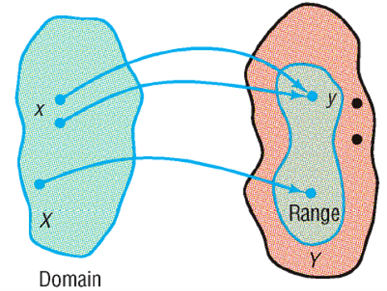
Numerically: using Tables
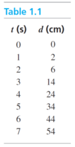 $\quad\qquad$
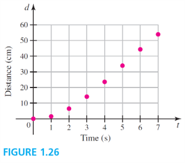
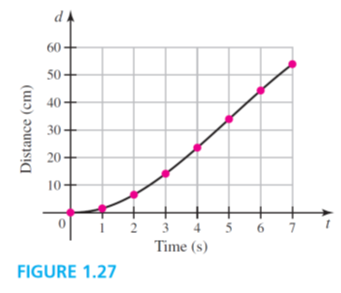
Visually: using Graphs
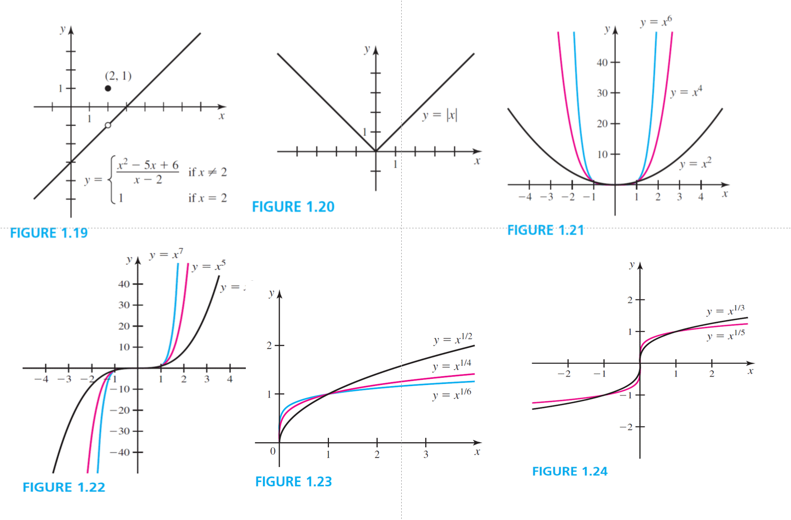
Algebraically: using Formulas
There are several Categories (ប្រភេទ) of Functions:
-
អនុគមន៍ពិជគណិត (algebraic functions): can be expressed in terms of algebraic operations (addition, subtraction, multiplication, division, and taking roots) involving a finite number of variables. They are of the form:
\[ f(x) = a_n x^n + a_{n-1} x^{n-1} + \ldots + a_1 x + a_0 \]
where \( a_i \) are constants and \( n \) is a non-negative integer.
-
អនុគមន៍មិនពិជគណិត (trenscendental functions): involve operations that go beyond algebraic definitions and include functions like exponentials, logarithms, trigonometric functions, and their inverses.
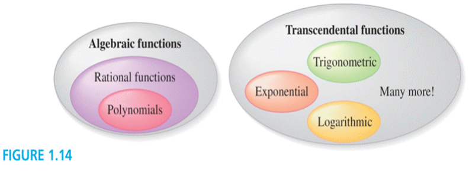
និយមន័យ.
(Vector spaces)
អនុគមន៍ $f$ កំណត់ពីសំណុំ $A$ ទៅសំណុំ $B$ គឺជាទំនាក់ទំនងមួយ ដែលភ្ជាប់ធាតុនីមួយៗ $x\in A$ ទៅធាតុតែមួយគត់ $f(x)\in B$ ។
គេសរសេរ៖
\[
\begin{array}{rccl}
f: & A &\longrightarrow & B\\
& x & \longmapsto & y = f(x)
\end{array}
\]
-
សំណុំ $A$ ហៅថា ដែនកំណត់ (domain) របស់អនុគមន៍ ហើយ $f(x)$ ហៅថា តម្លៃរបស់ $f$ ត្រង់ $x$ អានថា "$f$ នៃ $x$"
The សំណុំរូបភាព (range) of $f$ is the set of all possible values of $f(x)$ as $x$ varies throughout the domain.
-
អថេរ $x\in A$ ហៅថា អថេរមិនអាស្រ័យ (independent variable) ហើយតម្លៃ $y$ នៅក្នុងសំណុំរូបភាពរបស់ $f$ ហៅថា អថេរអាស្រ័យ (dependent variable) ។
Note:
- ក្នុងការអនុវត្តន៍ គេច្រើនតាងសំណុំ $A$ និង $B$ ដោយ $\R$ (សំណុំចំនួនពិត) ។
- ក្នុងវិទ្យាសាស្ត្រ និងបច្ចេកវិទ្យា គេតែងចាត់ទុកការសិក្សាអនុគមន៍ ដូចទៅនឹងដំណើរការរបស់ ម៉ាស៊ីន
(machine)។ ដូច្នេះ
សំណុំដែនកំណត់គឺជាសំណុំ inputs (ធាតុចូល) ហើយសំណុំរូបភាព គឺជាសំណុំ outputs (ធាតុចេញ) ។

$\quad$

- វិធីសំខាន់មួយក្នុងការមើលអនុគមន៍មួយ គឺក្រាហ្វរបស់វា ដែលកំណត់សរសេរដោយ៖
$$
\Bigl\{(x, f(x)) \mid x \in A\Bigr\}
$$
-
Since the $y$-coordinate of any point $(x, y)$ on the graph is $y=f(x)$, the value of $f(x)$ from the graph is the height of the graph above the point $x$.
Examples 1.
The graph of a function $f$ is shown in Figure 6.
-
Find the values of $f(1)$ and $f(5)$.
-
What are the domain and range of $f$ ?
Example 2.
Sketch the graph (ចូរសង់ក្រាហ្វ) and find the the domain and range of each function.
-
$f(x)=2 x-1$
-
$g(x)=x^2$

$\qquad$

Example 3.
If $f(x)=2 x^2-5 x+1$ and $h \neq 0$, evaluate $$\frac{f(a+h)-f(a)}{h}$$
\[
4a + 2h - 5
\]
Remember:
- គ្រប់សមីការ មិនសុទ្ធតែជាអនុគមន៍នោះទេ/
Not every equation defines a function.
- គ្រប់តារាង មិនសុទ្ធតែជាអនុគមន៍នោះទេ/
Not every table defines a function.
The Vertical Line Test
ខ្សែកោងនៅក្នុងប្លង់ $xy$ គឺជាក្រាហ្វរបស់អនុគមន៍មានអថេរ $x$ លុះត្រាតែ បន្ទាត់ឈរប្រសព្វជាមួយខ្សែកោងបានមួយចំណុចគត់។

$\qquad$
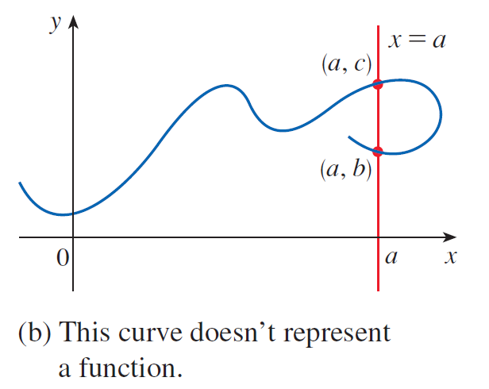
Vertical Line Test:
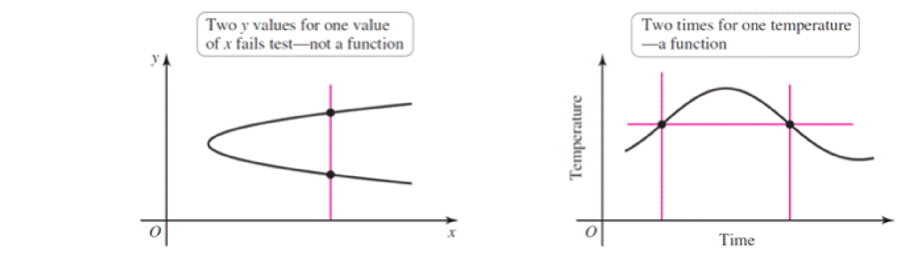

Practices.
សូមពិនិត្យ លំហាត់ ១.១ ទំព័រទី ១៧-១៨ ចាប់ពីលំហាត់ទី១ ដល់ ១៤។
Methods to find Domain and Range:
-
ដើម្បីរកដែនកំណត់របស់អនុគមន៍កំណត់ដោយសមីការ គេអនុវត្តតាមជំហានខាងក្រោម៖
- ផ្តើមដោយសំណុំចំនួនពិត $\mathbb R$៖ សន្មតថាដែនកំណត់ដំបូងរបស់អនុគមន៍ គឺជា \( \mathbb{R} \) ។
- ពិនិត្យកន្សោមភាគបែង៖ ប្រសិនបើសមីការមានភាគបែង ចូរកំណត់តម្លៃអថេរមិនអាស្រ័យ (ជាទូទៅ \( x \)) ដែលធ្វើឱ្យកន្សោមភាគបែងស្មើសូន្យ។ ដូច្នេះ គេត្រូវដកចោលតម្លៃទាំងនេះ ព្រោះគេមិនអាចចែកនឹងសូន្យបានទេ ។
- ពិនិត្យរករ៉ាឌីកាល់៖ បើអនុគមន៍ណាមានរ៉ាឌីកាល់ (ឬឫសការ៉េ) ជាពិសេសរ៉ាឌីកាល់ដែលមានសន្ទស្សន៍គូ ត្រូវកំណត់ថាកន្សោមក្នុងរ៉ាឌីកាល់មិនអវិជ្ជមាន ព្រោះឫសការេនៃចំនួនអវិជ្ជមានមិនអាចកំណត់បាន នៅក្នុងប្រព័ន្ធចំនួនពិតទេ។
Example. Find the domain of each of the following functions:
-
$f(x)=\frac{x+4}{x^2-2 x-3}$
-
$g(x)=x^2-9$
-
$h(x)=\sqrt{3-2 x}$
Methods to find Domain and Range:
-
មានច្រើនរបៀប ក្នុងការកំណត់បាន សំណុំរូបភាព ឬ ដែនតម្លៃ របស់អនុគមន៍មួយ
ដែលវាអាស្រ័យទៅលើភាពស្មុគស្មាញផ្សេងៗគ្នារបស់អនុគមន៍នោះ ហើយនឹងលក្ខណៈសម្គាល់របស់វា។
- To express it in terms of its inverse (algebraic manipulation).
-
To graph the function (graphical analysis) is one of the simplest and most effective methods
-
To do a horizontal line test
-
To find a global maximum or minimum (finding extreme points)
-
To find horizontal asymptotes (in rational functions)
Example. Find the range of each of the following functions:
- $f(x)=\frac{x+4}{x^2-2 x-3}$
- $g(x)=x^2-9$
- $h(x)=\sqrt{3-2 x}$
Quiz No. 1 (M2) - 05/02/25:
-
ចូររកដែនកំណត់ និង រ៉ង់របស់ទំនាក់ទំនងក្នុងតារាងខាងក្រោម៖
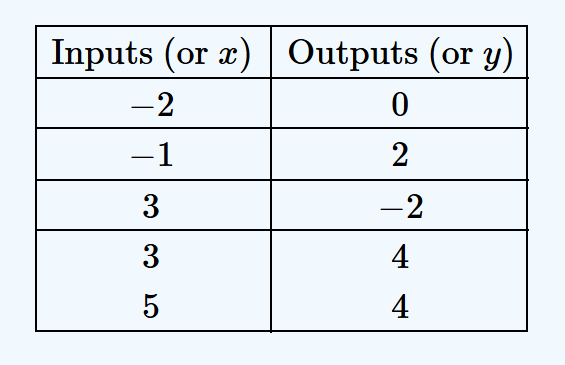
-
Determine if the following relations are functions.
-
$R=\{(0,1),(1,3),(3,4),(5,2), (1,-2), (3,-2)\}$
-
$S=\{(0,1),(0,2),(3,4),(3,1)\}$
-
$T=\{(0,1),(1,2),(3,4),(4,1,0), (2,1)\}$
-
A function $f$ is defined by
$$
f(x)= \begin{cases}1-x & \text { if } x \leqslant-1 \\ x^2 & \text { if } x \gt -1\end{cases}
$$
គណនា $f(-2), f(-1)$ និង $f(0)$ រួចគូសក្រាហ្វរបស់វា។
Quiz No. 1 (M2) - 05/02/25:
-
-
ចូររកដែនកំណត់ និង រ៉ង់របស់អនុគមន៍ក្នុងដ្យាក្រាមខាងក្រោម។
-
ចូរកំណត់អនុគមន៍តាមដ្យាក្រាមនេះ។
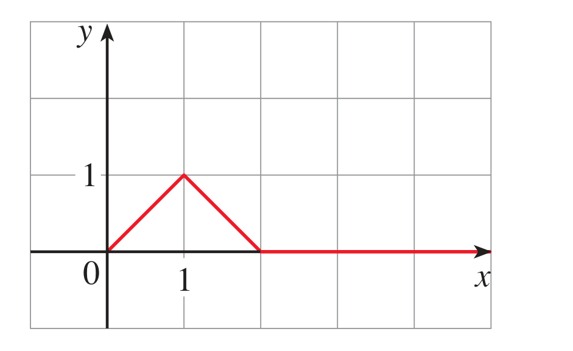
Quiz No. 1 (M1) - 05/02/25:
-
សីតុណ្ហភាព $T$ (គិតជា ${ }^{\circ} \mathrm{C}$) ត្រូវបានកត់ត្រារៀងរាល់ 2 ម៉ោងម្ដង ចាប់ពីកណ្ដាលអាធ្រាតដល់ម៉ោង 2:00 PM ក្នុងទីក្រុងមួយនៅថ្ងៃមួយក្នុងខែមិថុនា។ ពេល $t$ ត្រូវបានវាស់គិតជាម៉ោង ចាប់ពីពាក់កណ្តាលអធ្រាត្រ។
\[
\begin{array}{|c|c|c|c|c|c|c|c|c|}
\hline t & 0 & 2 & 4 & 6 & 8 & 10 & 12 & 14 \\
\hline T & 23 & 21 & 20 & 19 & 21 & 26 & 28 & 30 \\
\hline
\end{array}
\]
-
ចូរគូសក្រាហ្វតំណាង $T$ ជាអនុគមន៍ទៅនឹង $t$ ។
-
ដោយប្រើក្រាហ្វនេះ ចូរប៉ាន់ស្មានសីតុណ្ហភាពនៅម៉ោង 9:00 Am ។
-
ចូរគណនា
(a). $f(x)=4+3 x-x^2, \quad \frac{f(3+h)-f(3)}{h}, \qquad$
(b) $f(x)=x^3, \quad \frac{f(a+h)-f(a)}{h}$
(c) $f(x)=\frac{1}{x}, \quad \frac{f(x)-f(a)}{x-a},\qquad$
(d). $f(x)=\sqrt{x+2}, \quad \frac{f(x)-f(1)}{x-1}$
-
A function $f$ is defined by
$$
f(x)= \begin{cases} -2x & \text { if } x \leqslant 2 \\ x^2 & \text { if } x^2 \gt 2\end{cases}
$$
គណនា $f(-1), f(3)$ និង $f(0)$ រួចគូសក្រាហ្វរបស់វា។
-
Find the domain of the function.
i. $f(u)=\frac{u+1}{1+\frac{1}{u+1}}$
ii. $F(p)=\sqrt{2-\sqrt{p}}$
iii. $h(x)=\sqrt{x^2-4 x-5}$
-
-
ចូររកដែនកំណត់ និង រ៉ង់របស់អនុគមន៍ក្នុងដ្យាក្រាមខាងក្រោម។
-
ចូរកំណត់អនុគមន៍តាមដ្យាក្រាមនេះ។
Quiz No. 1 (M4):
-
Determine the domain and range for the relation shown in the table.
-
Determine if the following relations are functions.
-
$R=\{(0,1),(1,3),(3,4),(5,2)\}$
-
$R=\{(0,1),(0,2),(3,4)\}$
-
Use a mapping diagram to determine if the relation $R=\{(0,1),(0,2),(3,4)\}$ is a function.
-
Using the function $f=\{(0,1),(1,3),(3,4),(5,2)\}$, evaluate the following: a. $f(1)$, $\quad$ b. $f(5)$, $\quad$ c. $f(3)$
Quiz No. 1:
-
Determine whether the curve is the graph of a function
of $x$. If it is, state the domain and range of the function.
-
If $g(x)=\frac{x}{\sqrt{x+1}}$, find $g(0), g(3), 5 g(a), \frac{1}{2} g(4 a), g\left(a^2\right)$, $[g(a)]^2, g(a+h)$, and $g(x-a)$.
-
Evaluate $f(-3), f(0)$, and $f(2)$ for the piecewise defined function. Then sketch the graph of the function.
-
$f(x)= \begin{cases}x^2+2 & \text { if } x\lt 0 \\ x & \text { if } x \geqslant 0\end{cases}$
-
$f(x)= \begin{cases}5 & \text { if } x \lt 2 \\ \frac{1}{2} x-3 & \text { if } x \geqslant 2\end{cases}$
Quiz No. 1 (S):
-
Is the following Arrow diagram is a function? Yes or No?
-
គេឱ្យសំណុំ $A=\{1,2,3,4\}, B=\{2,3,4\}$ ។ តើមួយណាជាអនុគមន៍ពី $A$ ទៅ $B$?
(a) $\{(1,2),(1,3),(2,3),(3,3)\}, \qquad$ (b) $\{(1,3),(2,3)\}$
(c) $\{(1,3),(2,2),(3,3)\}, \qquad$ (d)
$\{(1,2),(2,3),(3,2),(3,4)\}$
-
តើមួយណាមិនមែនជាអនុគមន៍ ?
a. $\left\{(x, y): x, y \in R, x^2=y\right\}\qquad$
b. $\left\{(x, y): x, y \in R, y^2=x\right\}$
c. $\left\{(x, y): x, y \in R, x=y^3\right\}\qquad$
d. $\left\{(x, y): x, y \in R, y=x^3\right\}$
-
Using the function $f=\{(0,1),(1,3),(3,4),(5,2)\}$, evaluate the following:
a. $f(1)$, $\quad$ b. $f(5)$, $\quad$ c. $f(3)$
Quiz No. 1:
-
យាយរបស់អ្នកមានដើមស្រល់នៅក្នុងទីធ្លារបស់គាត់ ដែលជ្រុះផ្លែច្រើន។ គាត់នឹងបង់លុយឱ្យអ្នក $\$0.10 $ សម្រាប់ការរប្រមូលបានផ្លែស្រល់ជ្រុះមួយកូនបាវ។ កាលពីសប្តាហ៍មុនអ្នករកបាន $5 ដុល្លារ ក្នុងការប្រមូលសម្រាមនេះ ។
-
ចូរសរសេរទំនាក់ទំនងមួយអំពីចំនួនទឹកប្រាក់សរុបដែលអ្នកអាចរកបានជាអនុគមន៍ទៅនឹងចំនួនកូនបាវដាក់ផ្លែស្រល់ ដែលអ្នកប្រមូលបាន ។
-
ចូរកំណត់អថេរអាស្រ័យ និងអថេរមិនអាស្រ័យ។
-
ប្រសិនបើអ្នកប្រមូលបានចំនួន 200 កូនបាវក្នុងសប្តាហ៍នេះ តើអ្នករកលុយបានប៉ុន្មាន?
-
If $g(x)=\frac{x}{\sqrt{x+1}}$, find $g(0), g(3), 5 g(a), \frac{1}{2} g(4 a), g\left(a^2\right)$, $[g(a)]^2, g(a+h)$, and $g(x-a)$.
Topic 2. គម្រូគណិតវិទ្យា (Mathematical Models):
A Catalog of Essential Functions
បង្រៀនដោយ
ហាំ ការីម
Mathematical Models
-
ម៉ូដែលគណិតវិទ្យា គឺជាការពិពណ៌នា (កន្សោម) តាមវិធីគណិតវិទ្យា អំពីបាតុភូតពិតប្រាកដនៅក្នុងជីវភាពរស់នៅ ។
- នៅពេលបង្កើតគំរូគណិតវិទ្យាសម្រាប់ចំណោទបញ្ហាពិតប្រាកដមួយ គេចាប់ផ្តើមដោយកំណត់អថេរមិនអាស្រ័យ និងអថេរអាស្រ័យ ហើយធ្វើឱ្យចំណោទនេះកាន់តែងាយស្រួលតាមរយៈការសន្មតមួយចំនួនផ្សេងទៀត។
-
បន្ទាប់មកប្រើការយល់ដឹងរបស់យើងលើស្ថានភាព (លក្ខណៈរូប) និងប្រើប្រាស់ឧបករណ៍គណិតវិទ្យានានា ដើម្បីបង្កើតបានសមីការ ដែលភ្ជាប់អថេរទាំងនោះ។
- គោលបំណងនៃការបង្កើតគម្រូនេះគឺ៖
- ស្វែងយល់អំពីបាតុភូតនានាដែលកើតមាន និង
(to understand the phenomenon and)
- ធ្វើការព្យាករណ៍អំពីទ្រង់ទ្រាយរបស់បាតុភូតនោះ នៅពេលអនាគត ( to make predictions about future behavior)
The modeling process
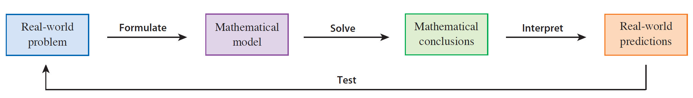
Fig.1. The modeling process
-
រូបទី១. បង្ហាញដំណើរការក្នុងការបង្កើតម៉ូដែលគណិតវិទ្យា។
- ម៉ូដែលគណិតវិទ្យាមួយ ពិតជាមិនអាចតំណាងឱ្យបាតុភូតរូបដែលកើតមានទាំងស្រុងនោះទេ — វាគ្រាន់តែជាការប៉ាន់ស្មាន (approximation) មួយប៉ុណ្ណោះ ។
- ម៉ូដែលណាមានប្រយោជន៍ ជួយឱ្យយើងមានភាពងាយស្រួលក្នុងកាគណនាតម្លៃលើចំណោទបញ្ហាពិតនោះ ប៉ុន្តែវាគ្រប់គ្រាន់សម្រាប់យើងផ្ដល់នូវការសន្និដ្ឋានដែលមានតម្លៃមួយ។
Linear Models
លក្ខណៈពិសេសរបស់អនុគមន៍លីនេអ៊ែរ គឺ វាកើនឬថយដោយអត្រាថេរមួយ។
For instance, $f (x) = 3x - 2$
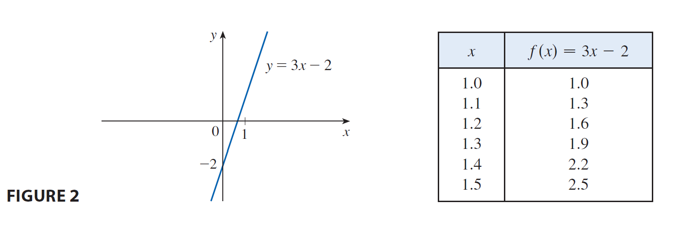
Fig.2. អនុគមន៍ $f (x) = 3x - 2$
Linear Models:
When we say that $y$ is a linear function of $x$, we mean that the graph of the function is a line, so we can use the slope-intercept form of the equation of a line to write a formula for the function as
$$
y=f(x)=m x+b
$$
where $m$ is the slope of the line and $b$ is the $y$-intercept.
A characteristic feature of linear functions is that they change at a constant rate. For instance, Figure 2 shows a graph of the linear function $f(x)=3 x-2$ and a table of sample values. Notice that whenever $x$ increases by 0.1 , the value of $f(x)$ increases by 0.3 . So $f(x)$ increases three times as fast as $x$. This means that the slope of the graph of $y=3 x-2$, namely 3 , can be interpreted as the rate of change of $y$ with respect to $x$.